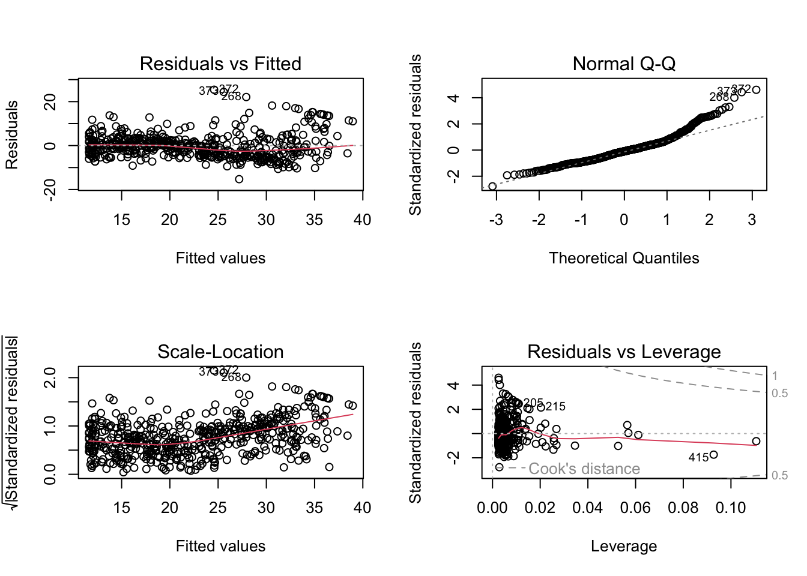

x <- c(1,3,2,5)
x[1] 1 3 2 5x = c(1,6,2)
x[1] 1 6 2y = c(1,4,3)
y[1] 1 4 3x <- c(1,3,2,5)
x[1] 1 3 2 5x = c(1,6,2)
x[1] 1 6 2y = c(1,4,3)
y[1] 1 4 3You can also add a code chunk by using keyboard shortcut: “control + option + I” on Mac.
length(x) # What does length() do?[1] 3length(y)[1] 3x+y[1] 2 10 5ls() # List objects in the environment[1] "x" "y"rm(x,y) # Remove objects
ls()character(0)rm(list=ls()) # Danger! What does this do? Not recommended!?matrix # to get help on matrices
# -> creates a matrix from the given set of values.
x = matrix(data = c(1,2,3,4), nrow = 2, ncol = 2) # Create a 2x2 matrix object
x [,1] [,2]
[1,] 1 3
[2,] 2 4x2 = matrix(c(1,2,3,4),2,2)
x2 [,1] [,2]
[1,] 1 3
[2,] 2 4x3 = matrix(c(1,2,3,4),2,2,byrow = TRUE) # What about byrow=F?
x4 = matrix(c(1,2,3,4),2,2,byrow = FALSE)in the above example “x1”, “x2”, and “x4” are the same matrix.
x = matrix(data = c(1,2,3,4), nrow = 2, ncol = 2)
sqrt(x) # What does x look like? [,1] [,2]
[1,] 1.000000 1.732051
[2,] 1.414214 2.000000x^2 [,1] [,2]
[1,] 1 9
[2,] 4 16x = rnorm(50) # Generate a vector of 50 numbers using the rnorm() function
y = x + rnorm(50,mean = 50,sd = .1) # What does rnorm(50,mean=50,sd=.1) generate?
cor(x,y) # Correlation of x and y[1] 0.9957348set.seed(1303) # Set the seed for Random Number Generator (RNG) to generate values that are reproducible.
rnorm(50) [1] -1.1439763145 1.3421293656 2.1853904757 0.5363925179 0.0631929665
[6] 0.5022344825 -0.0004167247 0.5658198405 -0.5725226890 -1.1102250073
[11] -0.0486871234 -0.6956562176 0.8289174803 0.2066528551 -0.2356745091
[16] -0.5563104914 -0.3647543571 0.8623550343 -0.6307715354 0.3136021252
[21] -0.9314953177 0.8238676185 0.5233707021 0.7069214120 0.4202043256
[26] -0.2690521547 -1.5103172999 -0.6902124766 -0.1434719524 -1.0135274099
[31] 1.5732737361 0.0127465055 0.8726470499 0.4220661905 -0.0188157917
[36] 2.6157489689 -0.6931401748 -0.2663217810 -0.7206364412 1.3677342065
[41] 0.2640073322 0.6321868074 -1.3306509858 0.0268888182 1.0406363208
[46] 1.3120237985 -0.0300020767 -0.2500257125 0.0234144857 1.6598706557set.seed(3) # Try different seeds?
y = rnorm(100)
set.seed(32) # Try different seeds?
y2 = rnorm(100)
set.seed(321) # Try different seeds?
y3 = rnorm(100)mean(y)[1] 0.01103557var(y)[1] 0.7328675sqrt(var(y))[1] 0.8560768sd(y)[1] 0.8560768x = rnorm(100)
y = rnorm(100)
par(bg = "#FCFCF6")
plot(x,y, pch = 20, col = "blue") # Scatterplot for two numeric variables by default
plot(x,y, pch = 20, col = "blue",xlab ="this is the x-axis",
ylab ="this is the y-axis",main="Plot of X vs Y") # Add labelspdf("Figure01.pdf") # Save as pdf, add a path or it will be stored on the project directoryüì∫ This 5 minute video goes over how to set graphical parameters using ‚Äúpar‚Äù function and ‚Äúdev.off‚Äù function.
par(bg = "#FCFCF6")
plot(x,y,pch = 20, col = "forestgreen") # Try different colors
plot(x,y,pch = 20, col = "indianred3") 
plot(x,y,pch = 20, col = "paleturquoise3") 
plot(x,y,pch = 20, col = "plum4") #dev.off() # Close the file using the dev.off function
par(bg = "#FCFCF6")
x1 = seq(1,10) # Same as x=c(1:10)
x1 [1] 1 2 3 4 5 6 7 8 9 10x2 = 1:10
x2 [1] 1 2 3 4 5 6 7 8 9 10# x1 and x2 are the same
x = seq(-pi,pi,length = 50)
y = x
y [1] -3.14159265 -3.01336438 -2.88513611 -2.75690784 -2.62867957 -2.50045130
[7] -2.37222302 -2.24399475 -2.11576648 -1.98753821 -1.85930994 -1.73108167
[13] -1.60285339 -1.47462512 -1.34639685 -1.21816858 -1.08994031 -0.96171204
[19] -0.83348377 -0.70525549 -0.57702722 -0.44879895 -0.32057068 -0.19234241
[25] -0.06411414 0.06411414 0.19234241 0.32057068 0.44879895 0.57702722
[31] 0.70525549 0.83348377 0.96171204 1.08994031 1.21816858 1.34639685
[37] 1.47462512 1.60285339 1.73108167 1.85930994 1.98753821 2.11576648
[43] 2.24399475 2.37222302 2.50045130 2.62867957 2.75690784 2.88513611
[49] 3.01336438 3.14159265(Adapted from ISLR Chapter 3 Lab: Introduction to R)
A=matrix(1:16,4,4)
A [,1] [,2] [,3] [,4]
[1,] 1 5 9 13
[2,] 2 6 10 14
[3,] 3 7 11 15
[4,] 4 8 12 16A[2,3][1] 10A[c(1,3),c(2,4)] [,1] [,2]
[1,] 5 13
[2,] 7 15A[1:3,2:4] [,1] [,2] [,3]
[1,] 5 9 13
[2,] 6 10 14
[3,] 7 11 15A[1:2,] [,1] [,2] [,3] [,4]
[1,] 1 5 9 13
[2,] 2 6 10 14A[,1:2] [,1] [,2]
[1,] 1 5
[2,] 2 6
[3,] 3 7
[4,] 4 8A[1,][1] 1 5 9 13A[-c(1,3),] [,1] [,2] [,3] [,4]
[1,] 2 6 10 14
[2,] 4 8 12 16A[-c(1,3),-c(1,3,4)][1] 6 8dim(A)[1] 4 4Auto=read.table("https://raw.githubusercontent.com/karlho/knowledgemining/gh-pages/data/Auto.data")
# fix(Auto) # Starting the X11 R data editor
Auto=read.table("https://raw.githubusercontent.com/karlho/knowledgemining/gh-pages/data/Auto.data",header=T,na.strings="?")
# fix(Auto)
Auto=read.csv("https://raw.githubusercontent.com/karlho/knowledgemining/gh-pages/data/Auto.csv",header=T,na.strings="?")
# fix(Auto)
dim(Auto)[1] 397 9Auto[1:4,] mpg cylinders displacement horsepower weight acceleration year origin
1 18 8 307 130 3504 12.0 70 1
2 15 8 350 165 3693 11.5 70 1
3 18 8 318 150 3436 11.0 70 1
4 16 8 304 150 3433 12.0 70 1
name
1 chevrolet chevelle malibu
2 buick skylark 320
3 plymouth satellite
4 amc rebel sstAuto=na.omit(Auto)
dim(Auto)[1] 392 9names(Auto)[1] "mpg" "cylinders" "displacement" "horsepower" "weight"
[6] "acceleration" "year" "origin" "name" Auto=read.table("https://www.statlearning.com/s/Auto.data",header=T,na.strings="?")
dim(Auto)[1] 397 9# plot(cylinders, mpg)
par(bg = "#FCFCF6")
plot(Auto$cylinders, Auto$mpg)attach(Auto)
plot(cylinders, mpg)
cylinders=as.factor(cylinders)
plot(cylinders, mpg)
plot(cylinders, mpg, col="red")plot(cylinders, mpg, col="red", varwidth=T)
plot(cylinders, mpg, col="red", varwidth=T,horizontal=T)plot(cylinders, mpg, col="red", varwidth=T, xlab="cylinders", ylab="MPG")
hist(mpg)
hist(mpg,col=2)
hist(mpg,col=2,breaks=15)
#pairs(Auto)
pairs(~ mpg + displacement + horsepower + weight + acceleration, Auto)plot(horsepower,mpg)
# identify(horsepower,mpg,name) # Interactive: point and click the dot to identify cases
summary(Auto) mpg cylinders displacement horsepower weight
Min. : 9.00 Min. :3.000 Min. : 68.0 Min. : 46.0 Min. :1613
1st Qu.:17.50 1st Qu.:4.000 1st Qu.:104.0 1st Qu.: 75.0 1st Qu.:2223
Median :23.00 Median :4.000 Median :146.0 Median : 93.5 Median :2800
Mean :23.52 Mean :5.458 Mean :193.5 Mean :104.5 Mean :2970
3rd Qu.:29.00 3rd Qu.:8.000 3rd Qu.:262.0 3rd Qu.:126.0 3rd Qu.:3609
Max. :46.60 Max. :8.000 Max. :455.0 Max. :230.0 Max. :5140
NA's :5
acceleration year origin name
Min. : 8.00 Min. :70.00 Min. :1.000 Length:397
1st Qu.:13.80 1st Qu.:73.00 1st Qu.:1.000 Class :character
Median :15.50 Median :76.00 Median :1.000 Mode :character
Mean :15.56 Mean :75.99 Mean :1.574
3rd Qu.:17.10 3rd Qu.:79.00 3rd Qu.:2.000
Max. :24.80 Max. :82.00 Max. :3.000
summary(mpg) Min. 1st Qu. Median Mean 3rd Qu. Max.
9.00 17.50 23.00 23.52 29.00 46.60 ptbu=c("MASS","ISLR")
install.packages(ptbu, repos='http://cran.us.r-project.org')
The downloaded binary packages are in
/var/folders/md/xwgy73f942v77n3vlc1ydy9w0000gn/T//RtmpMU9xiH/downloaded_packageslapply(ptbu, require, character.only = TRUE)Loading required package: MASSLoading required package: ISLR
Attaching package: 'ISLR'The following object is masked _by_ '.GlobalEnv':
Auto[[1]]
[1] TRUE
[[2]]
[1] TRUElibrary(MASS)
library(ISLR)
par(bg = "#FCFCF6")
# Simple Linear Regression
# fix(Boston)
names(Boston) [1] "crim" "zn" "indus" "chas" "nox" "rm" "age"
[8] "dis" "rad" "tax" "ptratio" "black" "lstat" "medv" # lm.fit=lm(medv~lstat)
attach(Boston)
lm.fit=lm(medv~lstat,data=Boston)
attach(Boston)The following objects are masked from Boston (pos = 3):
age, black, chas, crim, dis, indus, lstat, medv, nox, ptratio, rad,
rm, tax, znlm.fit=lm(medv~lstat)
lm.fit
Call:
lm(formula = medv ~ lstat)
Coefficients:
(Intercept) lstat
34.55 -0.95 summary(lm.fit)
Call:
lm(formula = medv ~ lstat)
Residuals:
Min 1Q Median 3Q Max
-15.168 -3.990 -1.318 2.034 24.500
Coefficients:
Estimate Std. Error t value Pr(>|t|)
(Intercept) 34.55384 0.56263 61.41 <2e-16 ***
lstat -0.95005 0.03873 -24.53 <2e-16 ***
---
Signif. codes: 0 '***' 0.001 '**' 0.01 '*' 0.05 '.' 0.1 ' ' 1
Residual standard error: 6.216 on 504 degrees of freedom
Multiple R-squared: 0.5441, Adjusted R-squared: 0.5432
F-statistic: 601.6 on 1 and 504 DF, p-value: < 2.2e-16names(lm.fit) [1] "coefficients" "residuals" "effects" "rank"
[5] "fitted.values" "assign" "qr" "df.residual"
[9] "xlevels" "call" "terms" "model" coef(lm.fit)(Intercept) lstat
34.5538409 -0.9500494 confint(lm.fit) 2.5 % 97.5 %
(Intercept) 33.448457 35.6592247
lstat -1.026148 -0.8739505predict(lm.fit,data.frame(lstat=(c(5,10,15))), interval="confidence") fit lwr upr
1 29.80359 29.00741 30.59978
2 25.05335 24.47413 25.63256
3 20.30310 19.73159 20.87461predict(lm.fit,data.frame(lstat=(c(5,10,15))), interval="prediction") fit lwr upr
1 29.80359 17.565675 42.04151
2 25.05335 12.827626 37.27907
3 20.30310 8.077742 32.52846# What is the differnce between "conference" and "prediction" difference?
plot(lstat,medv)
abline(lm.fit)
abline(lm.fit,lwd=3)
abline(lm.fit,lwd=3,col="red")
plot(lstat,medv,col="red")
plot(lstat,medv,pch=16)
plot(lstat,medv,pch="+")
plot(1:20,1:20,pch=1:20)
par(bg = "#FCFCF6")
par(mfrow=c(2,2))
plot(lm.fit)
par(bg = "#FCFCF6") # set background color to match that of the website
par(mfrow = c(3,1), mar = c(2,15,1,15)) # set margins and layout
plot(predict(lm.fit), residuals(lm.fit))
plot(predict(lm.fit), rstudent(lm.fit))
plot(hatvalues(lm.fit))which.max(hatvalues(lm.fit))375
375 lm.fit=lm(medv~lstat+age,data=Boston)
summary(lm.fit)
Call:
lm(formula = medv ~ lstat + age, data = Boston)
Residuals:
Min 1Q Median 3Q Max
-15.981 -3.978 -1.283 1.968 23.158
Coefficients:
Estimate Std. Error t value Pr(>|t|)
(Intercept) 33.22276 0.73085 45.458 < 2e-16 ***
lstat -1.03207 0.04819 -21.416 < 2e-16 ***
age 0.03454 0.01223 2.826 0.00491 **
---
Signif. codes: 0 '***' 0.001 '**' 0.01 '*' 0.05 '.' 0.1 ' ' 1
Residual standard error: 6.173 on 503 degrees of freedom
Multiple R-squared: 0.5513, Adjusted R-squared: 0.5495
F-statistic: 309 on 2 and 503 DF, p-value: < 2.2e-16lm.fit=lm(medv~.,data=Boston)
summary(lm.fit)
Call:
lm(formula = medv ~ ., data = Boston)
Residuals:
Min 1Q Median 3Q Max
-15.595 -2.730 -0.518 1.777 26.199
Coefficients:
Estimate Std. Error t value Pr(>|t|)
(Intercept) 3.646e+01 5.103e+00 7.144 3.28e-12 ***
crim -1.080e-01 3.286e-02 -3.287 0.001087 **
zn 4.642e-02 1.373e-02 3.382 0.000778 ***
indus 2.056e-02 6.150e-02 0.334 0.738288
chas 2.687e+00 8.616e-01 3.118 0.001925 **
nox -1.777e+01 3.820e+00 -4.651 4.25e-06 ***
rm 3.810e+00 4.179e-01 9.116 < 2e-16 ***
age 6.922e-04 1.321e-02 0.052 0.958229
dis -1.476e+00 1.995e-01 -7.398 6.01e-13 ***
rad 3.060e-01 6.635e-02 4.613 5.07e-06 ***
tax -1.233e-02 3.760e-03 -3.280 0.001112 **
ptratio -9.527e-01 1.308e-01 -7.283 1.31e-12 ***
black 9.312e-03 2.686e-03 3.467 0.000573 ***
lstat -5.248e-01 5.072e-02 -10.347 < 2e-16 ***
---
Signif. codes: 0 '***' 0.001 '**' 0.01 '*' 0.05 '.' 0.1 ' ' 1
Residual standard error: 4.745 on 492 degrees of freedom
Multiple R-squared: 0.7406, Adjusted R-squared: 0.7338
F-statistic: 108.1 on 13 and 492 DF, p-value: < 2.2e-16library(car)Loading required package: carDatavif(lm.fit) crim zn indus chas nox rm age dis
1.792192 2.298758 3.991596 1.073995 4.393720 1.933744 3.100826 3.955945
rad tax ptratio black lstat
7.484496 9.008554 1.799084 1.348521 2.941491 lm.fit1=lm(medv~.-age,data=Boston)
summary(lm.fit1)
Call:
lm(formula = medv ~ . - age, data = Boston)
Residuals:
Min 1Q Median 3Q Max
-15.6054 -2.7313 -0.5188 1.7601 26.2243
Coefficients:
Estimate Std. Error t value Pr(>|t|)
(Intercept) 36.436927 5.080119 7.172 2.72e-12 ***
crim -0.108006 0.032832 -3.290 0.001075 **
zn 0.046334 0.013613 3.404 0.000719 ***
indus 0.020562 0.061433 0.335 0.737989
chas 2.689026 0.859598 3.128 0.001863 **
nox -17.713540 3.679308 -4.814 1.97e-06 ***
rm 3.814394 0.408480 9.338 < 2e-16 ***
dis -1.478612 0.190611 -7.757 5.03e-14 ***
rad 0.305786 0.066089 4.627 4.75e-06 ***
tax -0.012329 0.003755 -3.283 0.001099 **
ptratio -0.952211 0.130294 -7.308 1.10e-12 ***
black 0.009321 0.002678 3.481 0.000544 ***
lstat -0.523852 0.047625 -10.999 < 2e-16 ***
---
Signif. codes: 0 '***' 0.001 '**' 0.01 '*' 0.05 '.' 0.1 ' ' 1
Residual standard error: 4.74 on 493 degrees of freedom
Multiple R-squared: 0.7406, Adjusted R-squared: 0.7343
F-statistic: 117.3 on 12 and 493 DF, p-value: < 2.2e-16lm.fit1=update(lm.fit, ~.-age)lm.fit2=lm(medv~lstat+I(lstat^2))
summary(lm.fit2)
Call:
lm(formula = medv ~ lstat + I(lstat^2))
Residuals:
Min 1Q Median 3Q Max
-15.2834 -3.8313 -0.5295 2.3095 25.4148
Coefficients:
Estimate Std. Error t value Pr(>|t|)
(Intercept) 42.862007 0.872084 49.15 <2e-16 ***
lstat -2.332821 0.123803 -18.84 <2e-16 ***
I(lstat^2) 0.043547 0.003745 11.63 <2e-16 ***
---
Signif. codes: 0 '***' 0.001 '**' 0.01 '*' 0.05 '.' 0.1 ' ' 1
Residual standard error: 5.524 on 503 degrees of freedom
Multiple R-squared: 0.6407, Adjusted R-squared: 0.6393
F-statistic: 448.5 on 2 and 503 DF, p-value: < 2.2e-16lm.fit=lm(medv~lstat)
anova(lm.fit,lm.fit2)Analysis of Variance Table
Model 1: medv ~ lstat
Model 2: medv ~ lstat + I(lstat^2)
Res.Df RSS Df Sum of Sq F Pr(>F)
1 504 19472
2 503 15347 1 4125.1 135.2 < 2.2e-16 ***
---
Signif. codes: 0 '***' 0.001 '**' 0.01 '*' 0.05 '.' 0.1 ' ' 1par(mfrow=c(2,2))
par(bg = "#FCFCF6")
plot(lm.fit2)
lm.fit5=lm(medv~poly(lstat,5))
summary(lm.fit5)
Call:
lm(formula = medv ~ poly(lstat, 5))
Residuals:
Min 1Q Median 3Q Max
-13.5433 -3.1039 -0.7052 2.0844 27.1153
Coefficients:
Estimate Std. Error t value Pr(>|t|)
(Intercept) 22.5328 0.2318 97.197 < 2e-16 ***
poly(lstat, 5)1 -152.4595 5.2148 -29.236 < 2e-16 ***
poly(lstat, 5)2 64.2272 5.2148 12.316 < 2e-16 ***
poly(lstat, 5)3 -27.0511 5.2148 -5.187 3.10e-07 ***
poly(lstat, 5)4 25.4517 5.2148 4.881 1.42e-06 ***
poly(lstat, 5)5 -19.2524 5.2148 -3.692 0.000247 ***
---
Signif. codes: 0 '***' 0.001 '**' 0.01 '*' 0.05 '.' 0.1 ' ' 1
Residual standard error: 5.215 on 500 degrees of freedom
Multiple R-squared: 0.6817, Adjusted R-squared: 0.6785
F-statistic: 214.2 on 5 and 500 DF, p-value: < 2.2e-16summary(lm(medv~log(rm),data=Boston))
Call:
lm(formula = medv ~ log(rm), data = Boston)
Residuals:
Min 1Q Median 3Q Max
-19.487 -2.875 -0.104 2.837 39.816
Coefficients:
Estimate Std. Error t value Pr(>|t|)
(Intercept) -76.488 5.028 -15.21 <2e-16 ***
log(rm) 54.055 2.739 19.73 <2e-16 ***
---
Signif. codes: 0 '***' 0.001 '**' 0.01 '*' 0.05 '.' 0.1 ' ' 1
Residual standard error: 6.915 on 504 degrees of freedom
Multiple R-squared: 0.4358, Adjusted R-squared: 0.4347
F-statistic: 389.3 on 1 and 504 DF, p-value: < 2.2e-16# fix(Carseats)
names(Carseats) [1] "Sales" "CompPrice" "Income" "Advertising" "Population"
[6] "Price" "ShelveLoc" "Age" "Education" "Urban"
[11] "US" lm.fit=lm(Sales~.+Income:Advertising+Price:Age,data=Carseats)
summary(lm.fit)
Call:
lm(formula = Sales ~ . + Income:Advertising + Price:Age, data = Carseats)
Residuals:
Min 1Q Median 3Q Max
-2.9208 -0.7503 0.0177 0.6754 3.3413
Coefficients:
Estimate Std. Error t value Pr(>|t|)
(Intercept) 6.5755654 1.0087470 6.519 2.22e-10 ***
CompPrice 0.0929371 0.0041183 22.567 < 2e-16 ***
Income 0.0108940 0.0026044 4.183 3.57e-05 ***
Advertising 0.0702462 0.0226091 3.107 0.002030 **
Population 0.0001592 0.0003679 0.433 0.665330
Price -0.1008064 0.0074399 -13.549 < 2e-16 ***
ShelveLocGood 4.8486762 0.1528378 31.724 < 2e-16 ***
ShelveLocMedium 1.9532620 0.1257682 15.531 < 2e-16 ***
Age -0.0579466 0.0159506 -3.633 0.000318 ***
Education -0.0208525 0.0196131 -1.063 0.288361
UrbanYes 0.1401597 0.1124019 1.247 0.213171
USYes -0.1575571 0.1489234 -1.058 0.290729
Income:Advertising 0.0007510 0.0002784 2.698 0.007290 **
Price:Age 0.0001068 0.0001333 0.801 0.423812
---
Signif. codes: 0 '***' 0.001 '**' 0.01 '*' 0.05 '.' 0.1 ' ' 1
Residual standard error: 1.011 on 386 degrees of freedom
Multiple R-squared: 0.8761, Adjusted R-squared: 0.8719
F-statistic: 210 on 13 and 386 DF, p-value: < 2.2e-16attach(Carseats)
contrasts(ShelveLoc) Good Medium
Bad 0 0
Good 1 0
Medium 0 1summary(lm(medv~lstat*age,data=Boston))
Call:
lm(formula = medv ~ lstat * age, data = Boston)
Residuals:
Min 1Q Median 3Q Max
-15.806 -4.045 -1.333 2.085 27.552
Coefficients:
Estimate Std. Error t value Pr(>|t|)
(Intercept) 36.0885359 1.4698355 24.553 < 2e-16 ***
lstat -1.3921168 0.1674555 -8.313 8.78e-16 ***
age -0.0007209 0.0198792 -0.036 0.9711
lstat:age 0.0041560 0.0018518 2.244 0.0252 *
---
Signif. codes: 0 '***' 0.001 '**' 0.01 '*' 0.05 '.' 0.1 ' ' 1
Residual standard error: 6.149 on 502 degrees of freedom
Multiple R-squared: 0.5557, Adjusted R-squared: 0.5531
F-statistic: 209.3 on 3 and 502 DF, p-value: < 2.2e-16